FreeP Dialog/Pane Paired Visual Evidence
Real app-owned WPF and Avalonia render-target captures at a 96 DPI target. Semantic route coverage is not visual evidence.
WPF source desktop DPI was 144x144; app-owned rasters were normalized to logical 96 DPI before comparison. Captures include app-owned client content only; native non-client title bars are outside the paired pixel gate. WPF mode: visible-app-owned-render-target; scenario-isolated-processes; Avalonia mode: visible-app-owned-render-target; scenario-isolated-processes.
Scenarios 28 Paired 28 Pass 20 Mismatch 8 Limitation 0
design.slide-size.initial Pass
WPF 365.33x222.67 logical / 366x223 px @ 96 DPI; source 144x144 DPI; Avalonia 366x222.67 logical / 366x223 px @ 96 DPI; nonblank pass; focus pass; buttons pass; enabled state pass; target pixels 366x223/366x223; changed 8.49 %; foreground 50.93 %; mean/max 7.07/255; threshold pass; shell context unavailable
WPF context 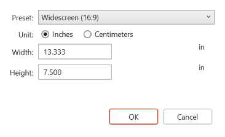
Avalonia context 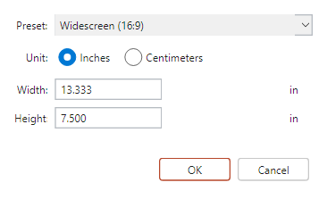
Target diff 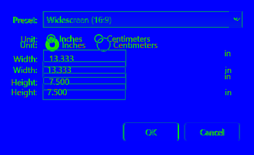
Shell-context diff Capture unavailable.
design.slide-size.invalid Pass
WPF 365.33x222.67 logical / 366x223 px @ 96 DPI; source 144x144 DPI; Avalonia 366x222.67 logical / 366x223 px @ 96 DPI; nonblank pass; focus pass; buttons pass; enabled state pass; target pixels 366x223/366x223; changed 8.38 %; foreground 50.88 %; mean/max 7.40/255; threshold pass; shell context unavailable
WPF context 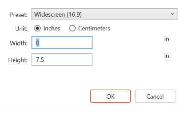
Avalonia context 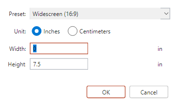
Target diff 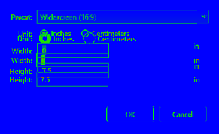
Shell-context diff Capture unavailable.
insert.header-footer.date-time Mismatch
WPF 345.33x260.67 logical / 346x261 px @ 96 DPI; source 144x144 DPI; Avalonia 346x254 logical / 346x254 px @ 96 DPI; nonblank pass; focus pass; buttons pass; enabled state pass; target pixels 346x261/346x254; changed 9.77 %; foreground 51.27 %; mean/max 7.88/224; threshold mismatch; shell context unavailable
Logical dimensions differ: WPF 345.33x260.67, Avalonia 346x254. Normalized target pixel threshold failed: changed 9.77 % (max 20 %), foreground changed 51.27 % (max 100 %), mean channel delta 7.88 (max 18.00), source pixels WPF 346x261, Avalonia 346x254. WPF context 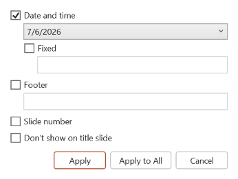
Avalonia context 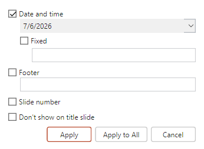
Target diff 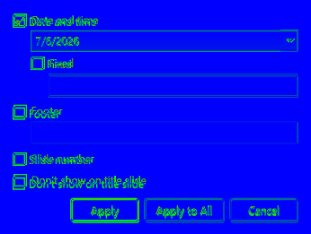
Shell-context diff Capture unavailable.
insert.header-footer.apply-to-all Mismatch
WPF 345.33x260.67 logical / 346x261 px @ 96 DPI; source 144x144 DPI; Avalonia 346x254 logical / 346x254 px @ 96 DPI; nonblank pass; focus pass; buttons pass; enabled state pass; target pixels 346x261/346x254; changed 13.09 %; foreground 61.98 %; mean/max 10.18/255; threshold mismatch; shell context unavailable
Logical dimensions differ: WPF 345.33x260.67, Avalonia 346x254. Normalized target pixel threshold failed: changed 13.09 % (max 20 %), foreground changed 61.98 % (max 100 %), mean channel delta 10.18 (max 18.00), source pixels WPF 346x261, Avalonia 346x254. WPF context 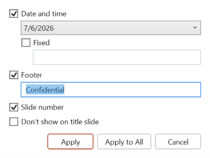
Avalonia context 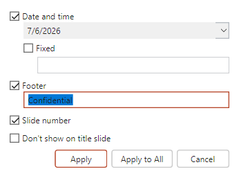
Target diff 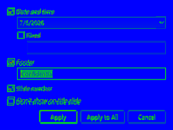
Shell-context diff Capture unavailable.
home.find-replace.find Mismatch
WPF 425.33x134 logical / 426x134 px @ 96 DPI; source 144x144 DPI; Avalonia 426x130 logical / 426x130 px @ 96 DPI; nonblank pass; focus pass; buttons pass; enabled state pass; target pixels 426x134/426x130; changed 11.12 %; foreground 87.47 %; mean/max 8.48/255; threshold mismatch; shell context unavailable
Logical dimensions differ: WPF 425.33x134, Avalonia 426x130. Normalized target pixel threshold failed: changed 11.12 % (max 20 %), foreground changed 87.47 % (max 100 %), mean channel delta 8.48 (max 18.00), source pixels WPF 426x134, Avalonia 426x130. WPF context 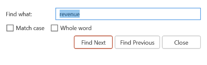
Avalonia context 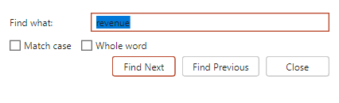
Target diff 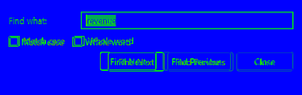
Shell-context diff Capture unavailable.
home.find-replace.replace Mismatch
WPF 425.33x198.67 logical / 426x199 px @ 96 DPI; source 144x144 DPI; Avalonia 426x192 logical / 426x192 px @ 96 DPI; nonblank pass; focus pass; buttons pass; enabled state pass; target pixels 426x199/426x192; changed 11.77 %; foreground 77.79 %; mean/max 8.25/255; threshold mismatch; shell context unavailable
Logical dimensions differ: WPF 425.33x198.67, Avalonia 426x192. Normalized target pixel threshold failed: changed 11.77 % (max 20 %), foreground changed 77.79 % (max 100 %), mean channel delta 8.25 (max 18.00), source pixels WPF 426x199, Avalonia 426x192. WPF context 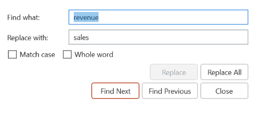
Avalonia context 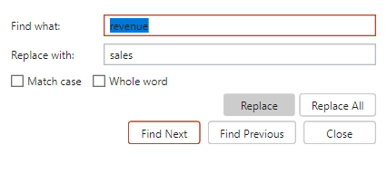
Target diff 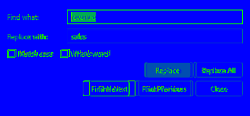
Shell-context diff Capture unavailable.
insert.hyperlink.initial Mismatch
WPF 405.33x216 logical / 406x216 px @ 96 DPI; source 144x144 DPI; Avalonia 406x212 logical / 406x212 px @ 96 DPI; nonblank pass; focus pass; buttons pass; enabled state pass; target pixels 406x216/406x212; changed 10.99 %; foreground 52.87 %; mean/max 8.84/255; threshold mismatch; shell context unavailable
Logical dimensions differ: WPF 405.33x216, Avalonia 406x212. Normalized target pixel threshold failed: changed 10.99 % (max 20 %), foreground changed 52.87 % (max 100 %), mean channel delta 8.84 (max 18.00), source pixels WPF 406x216, Avalonia 406x212. WPF context 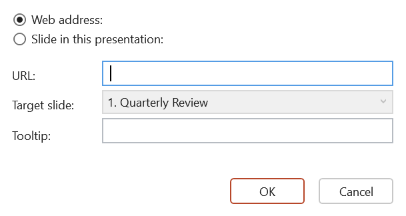
Avalonia context 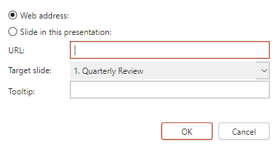
Target diff 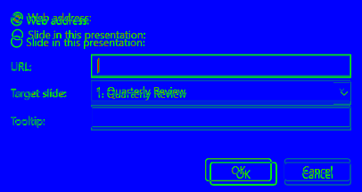
Shell-context diff Capture unavailable.
insert.hyperlink.validation Mismatch
WPF 405.33x216 logical / 406x216 px @ 96 DPI; source 144x144 DPI; Avalonia 406x212 logical / 406x212 px @ 96 DPI; nonblank pass; focus pass; buttons pass; enabled state pass; target pixels 406x216/406x212; changed 14.35 %; foreground 58.72 %; mean/max 11.19/255; threshold mismatch; shell context unavailable
Logical dimensions differ: WPF 405.33x216, Avalonia 406x212. Normalized target pixel threshold failed: changed 14.35 % (max 20 %), foreground changed 58.72 % (max 100 %), mean channel delta 11.19 (max 18.00), source pixels WPF 406x216, Avalonia 406x212. WPF context 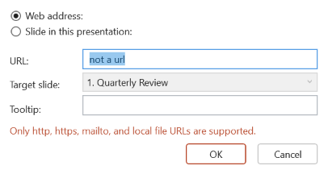
Avalonia context 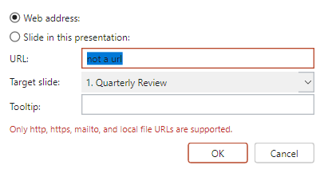
Target diff 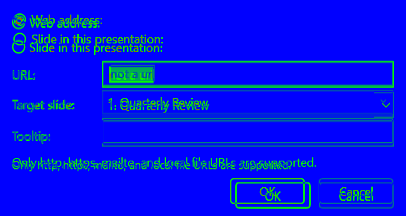
Shell-context diff Capture unavailable.
insert.hyperlink.populated Mismatch
WPF 405.33x216 logical / 406x216 px @ 96 DPI; source 144x144 DPI; Avalonia 406x212 logical / 406x212 px @ 96 DPI; nonblank pass; focus pass; buttons pass; enabled state pass; target pixels 406x216/406x212; changed 12.84 %; foreground 56.41 %; mean/max 10.45/255; threshold mismatch; shell context unavailable
Logical dimensions differ: WPF 405.33x216, Avalonia 406x212. Normalized target pixel threshold failed: changed 12.84 % (max 20 %), foreground changed 56.41 % (max 100 %), mean channel delta 10.45 (max 18.00), source pixels WPF 406x216, Avalonia 406x212. WPF context 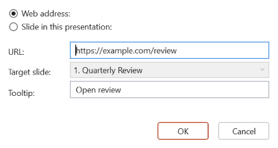
Avalonia context 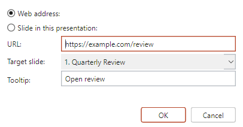
Target diff 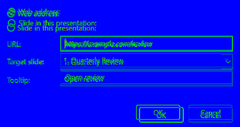
Shell-context diff Capture unavailable.
chart.edit-data.initial Pass
WPF 625.33x402.67 logical / 626x403 px @ 96 DPI; source 144x144 DPI; Avalonia 626x402.67 logical / 626x403 px @ 96 DPI; nonblank pass; focus pass; buttons pass; enabled state pass; target pixels 626x403/626x403; changed 10.42 %; foreground 18.31 %; mean/max 11.96/247; threshold pass; shell context unavailable
WPF context 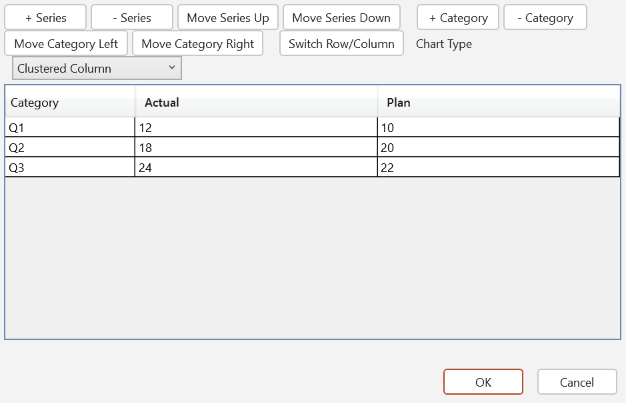
Avalonia context Target diff 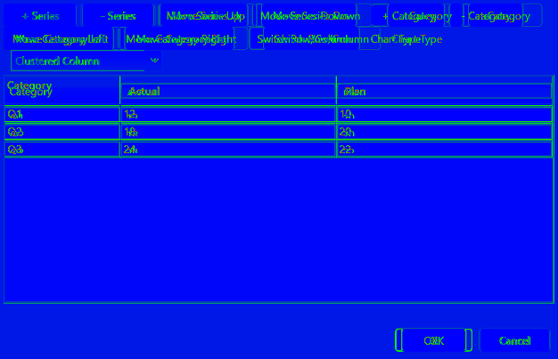
Shell-context diff Capture unavailable.
chart.edit-data.validation Pass
WPF 625.33x402.67 logical / 626x403 px @ 96 DPI; source 144x144 DPI; Avalonia 626x402.67 logical / 626x403 px @ 96 DPI; nonblank pass; focus pass; buttons pass; enabled state pass; target pixels 626x403/626x403; changed 11.33 %; foreground 19.63 %; mean/max 12.83/255; threshold pass; shell context unavailable
WPF context 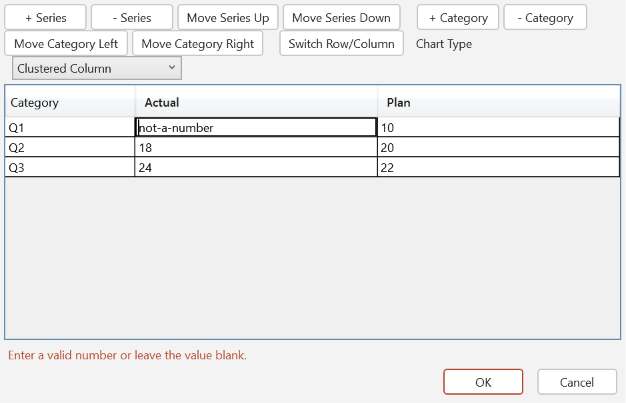
Avalonia context 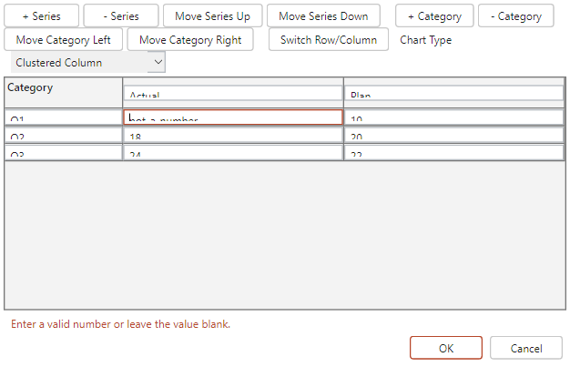
Target diff 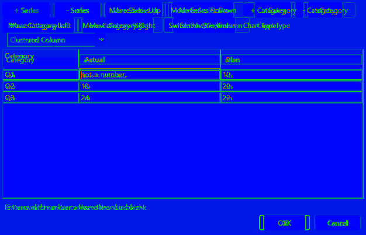
Shell-context diff Capture unavailable.
chart.edit-data.populated Pass
WPF 625.33x402.67 logical / 626x403 px @ 96 DPI; source 144x144 DPI; Avalonia 626x402.67 logical / 626x403 px @ 96 DPI; nonblank pass; focus pass; buttons pass; enabled state pass; target pixels 626x403/626x403; changed 10.42 %; foreground 18.31 %; mean/max 11.96/247; threshold pass; shell context unavailable
WPF context Avalonia context 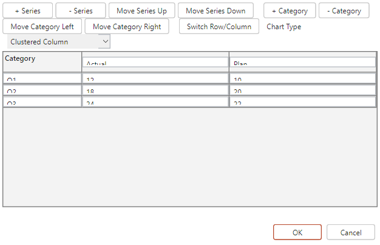
Target diff Shell-context diff Capture unavailable.
slideshow.custom-shows.initial Pass
WPF 625.33x402.67 logical / 626x403 px @ 96 DPI; source 144x144 DPI; Avalonia 626x402.67 logical / 626x403 px @ 96 DPI; nonblank pass; focus pass; buttons pass; enabled state pass; target pixels 626x403/626x403; changed 9.87 %; foreground 81.46 %; mean/max 10.91/255; threshold pass; shell context unavailable
WPF context 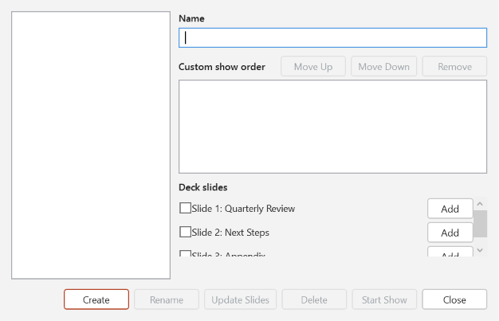
Avalonia context 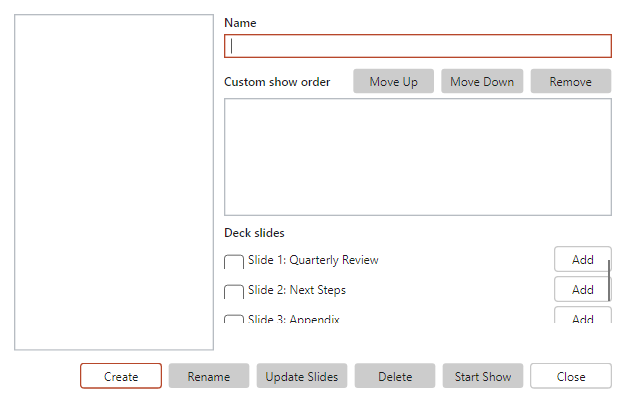
Target diff 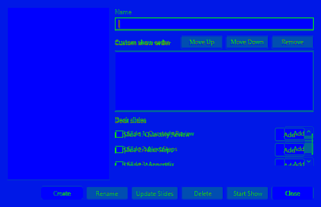
Shell-context diff Capture unavailable.
slideshow.custom-shows.validation Pass
WPF 625.33x402.67 logical / 626x403 px @ 96 DPI; source 144x144 DPI; Avalonia 626x402.67 logical / 626x403 px @ 96 DPI; nonblank pass; focus pass; buttons pass; enabled state pass; target pixels 626x403/626x403; changed 10.22 %; foreground 81.88 %; mean/max 11.11/255; threshold pass; shell context unavailable
WPF context 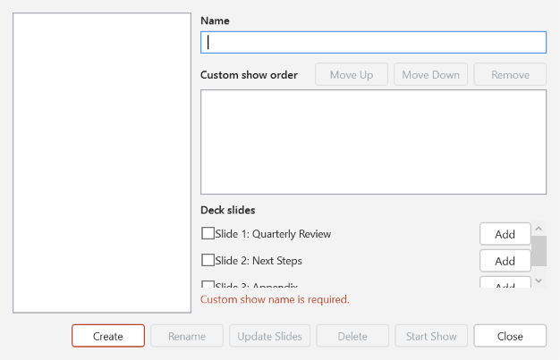
Avalonia context 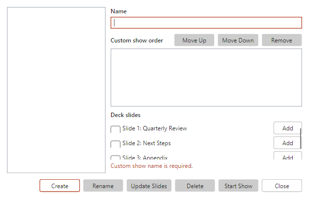
Target diff 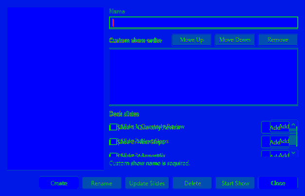
Shell-context diff Capture unavailable.
slideshow.custom-shows.populated Pass
WPF 625.33x402.67 logical / 626x403 px @ 96 DPI; source 144x144 DPI; Avalonia 626x402.67 logical / 626x403 px @ 96 DPI; nonblank pass; focus pass; buttons pass; enabled state pass; target pixels 626x403/626x403; changed 11.93 %; foreground 84.00 %; mean/max 11.73/255; threshold pass; shell context unavailable
WPF context 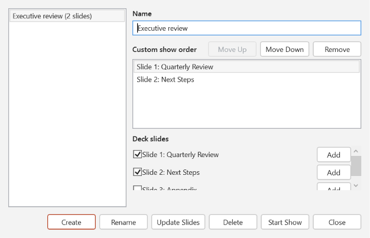
Avalonia context 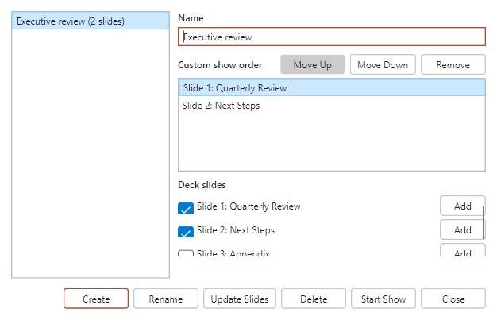
Target diff 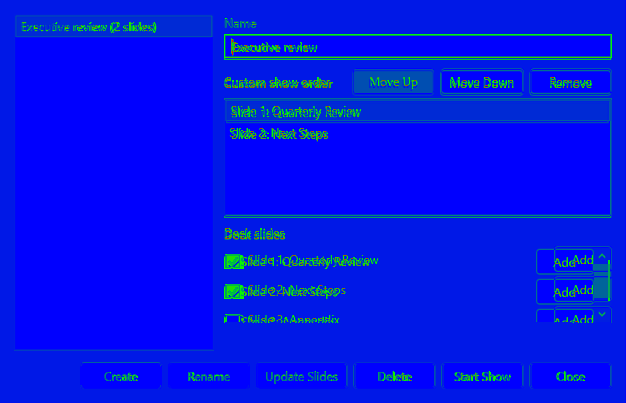
Shell-context diff Capture unavailable.
startup.slide-pane.seeded Mismatch
WPF 1280x760 logical / 1280x760 px @ 96 DPI; source 144x144 DPI; Avalonia 1280x760 logical / 1280x760 px @ 96 DPI; nonblank pass; focus pass; buttons pass; enabled state pass; target pixels 180x578/180x578; changed 20.21 %; foreground 26.48 %; mean/max 15.24/221; threshold mismatch; shell context 1280x760/1280x760; changed 30.41 %; foreground 32.99 %; mean/max 21.84/255; threshold mismatch
Normalized target pixel threshold failed: changed 20.21 % (max 20 %), foreground changed 26.48 % (max 100 %), mean channel delta 15.24 (max 18.00), source pixels WPF 180x578, Avalonia 180x578. WPF context Avalonia context 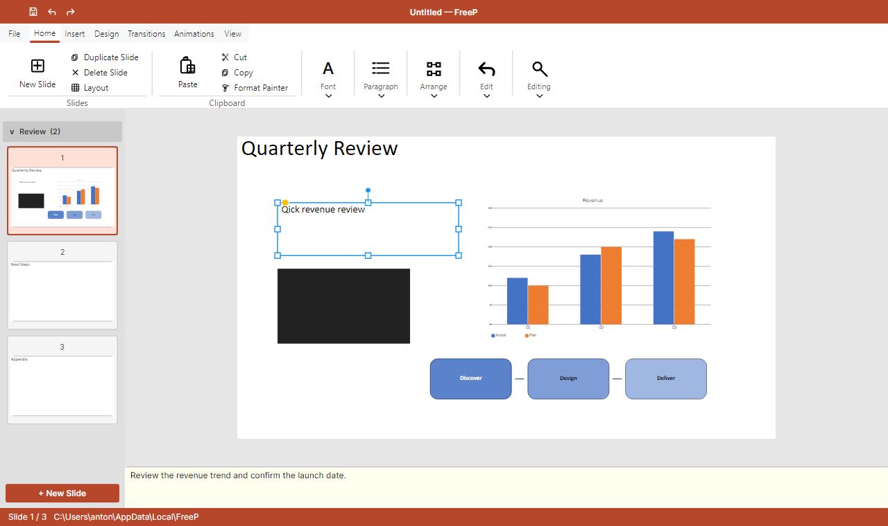
WPF target 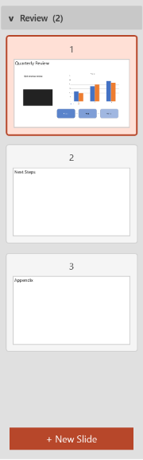
Avalonia target 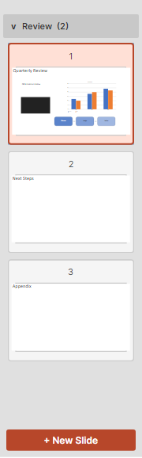
Target diff 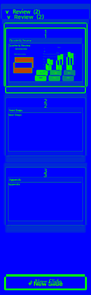
Shell-context diff
startup.notes-pane.seeded Pass
WPF 1280x760 logical / 1280x760 px @ 96 DPI; source 144x144 DPI; Avalonia 1280x760 logical / 1280x760 px @ 96 DPI; nonblank pass; focus pass; buttons pass; enabled state pass; target pixels 1100x60/1100x60; changed 3.12 %; foreground 64.08 %; mean/max 3.55/255; threshold pass; shell context 1280x760/1280x760; changed 30.41 %; foreground 32.99 %; mean/max 21.84/255; threshold mismatch
WPF context Avalonia context WPF target 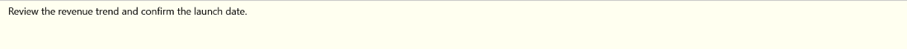
Avalonia target 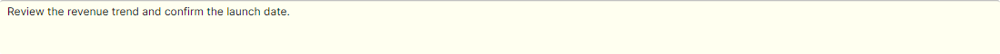
Target diff Shell-context diff 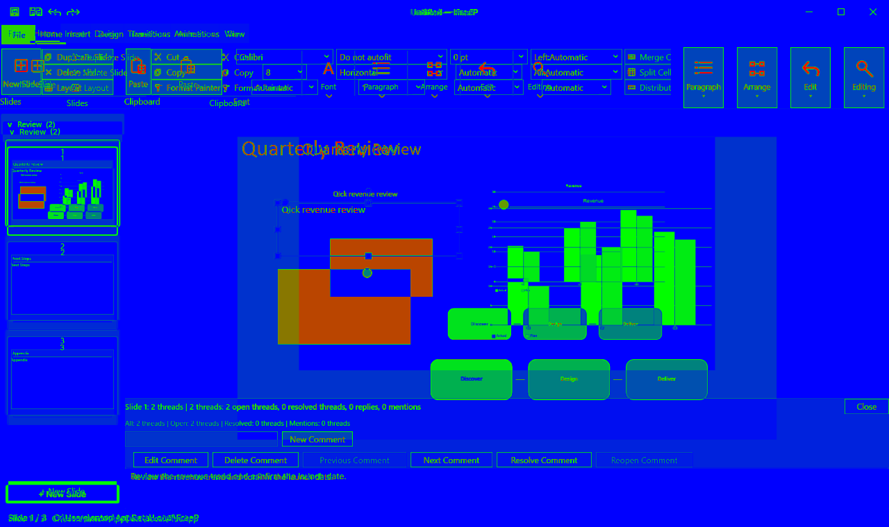
review.comments-pane.seeded Pass
WPF 1280x760 logical / 1280x760 px @ 96 DPI; source 144x144 DPI; Avalonia 1280x760 logical / 1280x760 px @ 96 DPI; nonblank pass; focus pass; buttons pass; enabled state pass; target pixels 1100x100/1100x100; changed 13.71 %; foreground 13.71 %; mean/max 8.26/190; threshold pass; shell context 1280x760/1280x760; changed 10.66 %; foreground 11.56 %; mean/max 7.52/255; threshold pass
WPF context 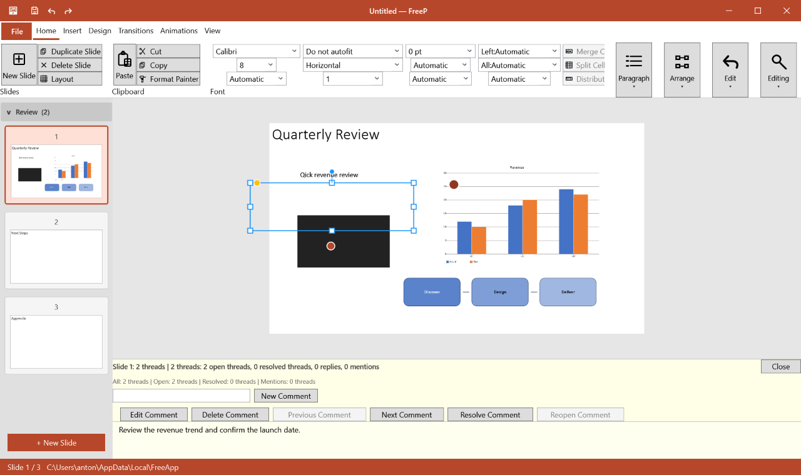
Avalonia context WPF target Avalonia target Target diff Shell-context diff
review.accessibility-pane.seeded Pass
WPF 1280x760 logical / 1280x760 px @ 96 DPI; source 144x144 DPI; Avalonia 1280x760 logical / 1280x760 px @ 96 DPI; nonblank pass; focus pass; buttons pass; enabled state pass; target pixels 320x578/320x578; changed 9.61 %; foreground 70.82 %; mean/max 7.77/255; threshold pass; shell context 1280x760/1280x760; changed 29.07 %; foreground 31.54 %; mean/max 21.23/255; threshold mismatch
WPF context Avalonia context WPF target Avalonia target Target diff Shell-context diff
review.alt-text-pane.seeded Pass
WPF 1280x760 logical / 1280x760 px @ 96 DPI; source 144x144 DPI; Avalonia 1280x760 logical / 1280x760 px @ 96 DPI; nonblank pass; focus pass; buttons pass; enabled state pass; target pixels 292x578/292x578; changed 10.15 %; foreground 86.38 %; mean/max 9.21/255; threshold pass; shell context 1280x760/1280x760; changed 29.38 %; foreground 31.88 %; mean/max 21.84/255; threshold mismatch
WPF context Avalonia context WPF target Avalonia target Target diff Shell-context diff
review.reading-order-pane.seeded Pass
WPF 1280x760 logical / 1280x760 px @ 96 DPI; source 144x144 DPI; Avalonia 1280x760 logical / 1280x760 px @ 96 DPI; nonblank pass; focus pass; buttons pass; enabled state pass; target pixels 320x578/320x578; changed 13.22 %; foreground 22.26 %; mean/max 11.78/255; threshold pass; shell context 1280x760/1280x760; changed 29.60 %; foreground 32.12 %; mean/max 21.78/255; threshold mismatch
WPF context Avalonia context WPF target Avalonia target Target diff Shell-context diff
review.proofing-pane.seeded Pass
WPF 1280x760 logical / 1280x760 px @ 96 DPI; source 144x144 DPI; Avalonia 1280x760 logical / 1280x760 px @ 96 DPI; nonblank pass; focus pass; buttons pass; enabled state pass; target pixels 320x578/320x578; changed 3.29 %; foreground 81.40 %; mean/max 2.94/255; threshold pass; shell context 1280x760/1280x760; changed 27.72 %; foreground 30.07 %; mean/max 20.07/255; threshold mismatch
WPF context Avalonia context WPF target Avalonia target Target diff Shell-context diff
accessibility.media-caption-pane.seeded Pass
WPF 1280x760 logical / 1280x760 px @ 96 DPI; source 144x144 DPI; Avalonia 1280x760 logical / 1280x760 px @ 96 DPI; nonblank pass; focus pass; buttons pass; enabled state pass; target pixels 320x578/320x578; changed 16.05 %; foreground 78.40 %; mean/max 15.85/255; threshold pass; shell context 1280x760/1280x760; changed 30.13 %; foreground 32.67 %; mean/max 22.45/255; threshold mismatch
WPF context Avalonia context WPF target Avalonia target Target diff Shell-context diff
context.smartart-text-pane.seeded Pass
WPF 1280x760 logical / 1280x760 px @ 96 DPI; source 144x144 DPI; Avalonia 1280x760 logical / 1280x760 px @ 96 DPI; nonblank pass; focus pass; buttons pass; enabled state pass; target pixels 320x578/320x578; changed 16.77 %; foreground 66.87 %; mean/max 13.06/255; threshold pass; shell context 1280x760/1280x760; changed 30.27 %; foreground 32.84 %; mean/max 22.17/255; threshold mismatch
WPF context Avalonia context WPF target Avalonia target Target diff Shell-context diff
animations.animation-pane.seeded Pass
WPF 1280x760 logical / 1280x760 px @ 96 DPI; source 144x144 DPI; Avalonia 1280x760 logical / 1280x760 px @ 96 DPI; nonblank pass; focus pass; buttons pass; enabled state pass; target pixels 240x578/240x578; changed 6.94 %; foreground 6.94 %; mean/max 5.12/250; threshold pass; shell context 1280x760/1280x760; changed 29.29 %; foreground 31.90 %; mean/max 22.18/255; threshold mismatch
WPF context Avalonia context WPF target Avalonia target Target diff Shell-context diff
file.print-options.seeded Pass
WPF 1280x760 logical / 1280x760 px @ 96 DPI; source 144x144 DPI; Avalonia 1280x760 logical / 1280x760 px @ 96 DPI; nonblank pass; focus pass; buttons pass; enabled state pass; target pixels 1010x578/1010x578; changed 8.35 %; foreground 8.35 %; mean/max 13.49/255; threshold pass; shell context 1280x760/1280x760; changed 6.01 %; foreground 6.01 %; mean/max 4.82/230; threshold pass
WPF context Avalonia context WPF target Avalonia target Target diff Shell-context diff
insert.table-picker.open Pass
WPF 1280x760 logical / 1280x760 px @ 96 DPI; source 144x144 DPI; Avalonia 1280x760 logical / 1280x760 px @ 96 DPI; nonblank pass; focus pass; buttons pass; enabled state pass; target pixels 1100x192/1100x192; changed 15.38 %; foreground 83.68 %; mean/max 12.22/255; threshold pass; shell context 1280x760/1280x760; changed 26.23 %; foreground 28.47 %; mean/max 16.68/255; threshold mismatch
WPF context Avalonia context WPF target Avalonia target Target diff Shell-context diff
design.layout-picker.open Pass
WPF 1280x760 logical / 1280x760 px @ 96 DPI; source 144x144 DPI; Avalonia 1280x760 logical / 1280x760 px @ 96 DPI; nonblank pass; focus pass; buttons pass; enabled state pass; target pixels 1100x181/1100x181; changed 2.16 %; foreground 56.97 %; mean/max 1.60/213; threshold pass; shell context 1280x760/1280x760; changed 25.63 %; foreground 27.81 %; mean/max 15.35/255; threshold mismatch
WPF context Avalonia context WPF target Avalonia target Target diff Shell-context diff